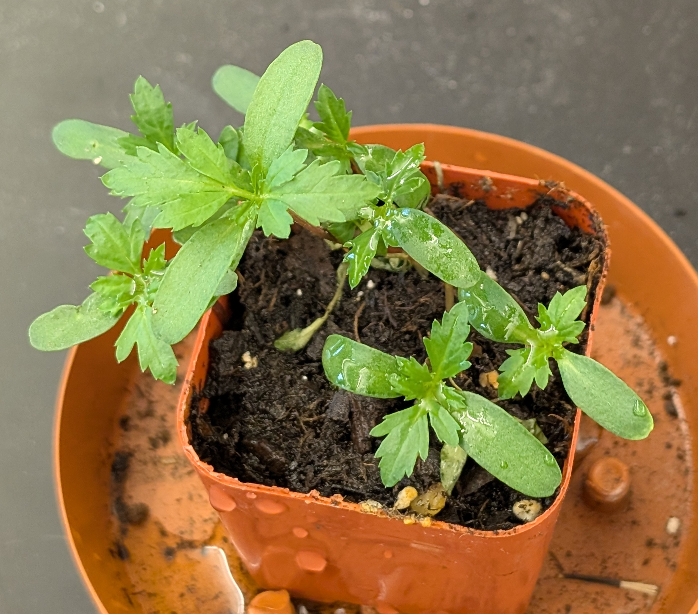

Marigold Plant Care Info

Light Requirements
- Marigolds thrive in full sun.
- They need at least 6 hours of direct sunlight daily.
- More sunlight encourages fuller growth and more blooms.
- In shady areas, marigolds become leggy and produce fewer flowers.
Water Requirements
- Marigolds prefer moderate watering.
- Water deeply once a week, allowing the top inch of soil to dry between waterings.
- In very hot or dry conditions, water 2–3 times per week.
- Avoid overwatering to prevent root rot and fungal diseases.
Soil & Fertilizer Recommendations
Soil:
- Well-draining, loose soil with pH 6.0 to 7.0.
- Mix in organic compost for nutrients and drainage.
Fertilizer:
- Minimal fertilizer needed — too much = fewer blooms.
- Use balanced, slow-release fertilizer (e.g., 10-10-10) once at planting.
- Light monthly feed with diluted liquid fertilizer if necessary.
Common Issues & Fixes
- Powdery Mildew: White coating on leaves. Fix: Space plants, water base, use fungicide.
- Aphids & Spider Mites: Tiny pests. Fix: Spray with water or use insecticidal soap.
- Root Rot: Wilting and yellow leaves. Fix: Improve drainage and let soil dry out.
- Leggy Growth: Too much shade/fertilizer. Fix: More sun, less nitrogen.
Transplanting Recommendations
When to Transplant:
- When roots circle the pot (root-bound).
- When the plant outgrows its container.
- When moving outdoors after the last frost.
Why This Works:
- Dense roots benefit from more space.
- Frost-sensitive — transplant after frost only.
- Larger pots help with nutrient uptake and blooming.
Want to buy Marigolds?